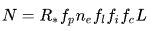

Three-Body Problem is the first of a Triology called Rememberance of Earth's Past, it follows multiple different
people over the course of many many years, it also Explores the Fermi Paradox which is the question as to why can't we find aliens?.
The Dark Forest Theory derived by CiXin Liu answers it in a short phase, "They don't want to be found." The Dark Forest theory is one
of the most interesting theories I have heard and feel like it might just apply to the real world.

According to this Equation, there should be about 1000 to 100,000 civilisations in just our galaxy, however, there isnt which confuses
many many researchers and so, we try to find a reason as to why they dont exist or why we cant find them. In the Three Body Problem book,
It follows a researcher who was not pleased with current day society and one day stumbled upon an opportunity of a lifetime, to doom all
of humanity